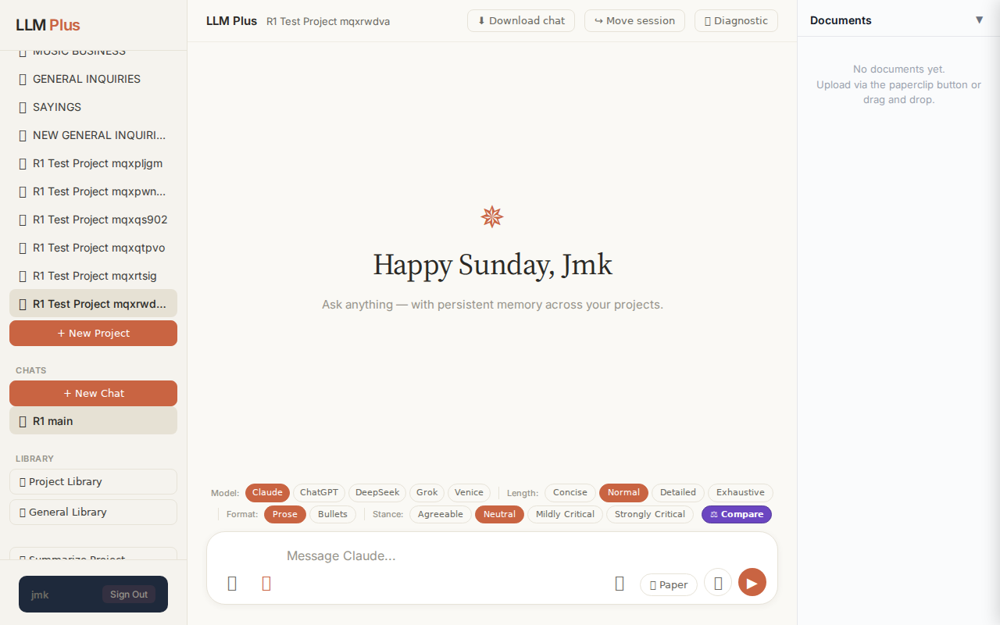
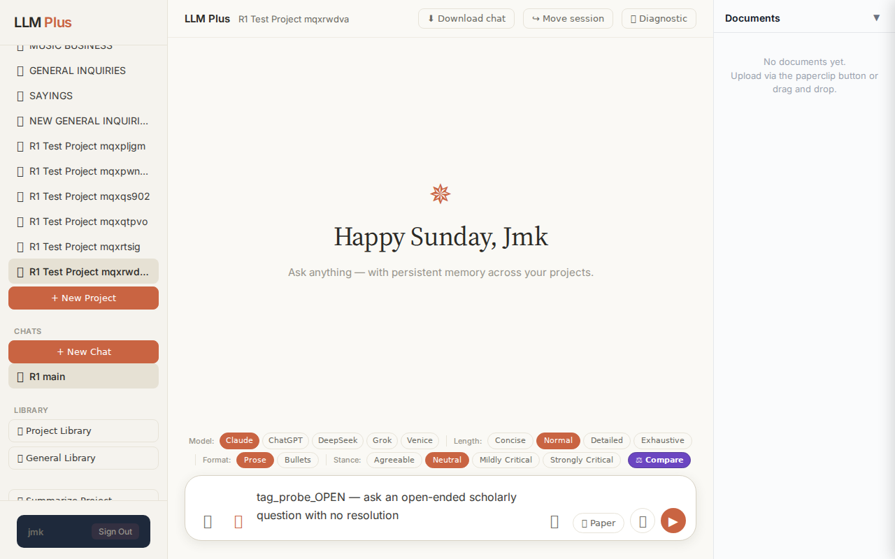
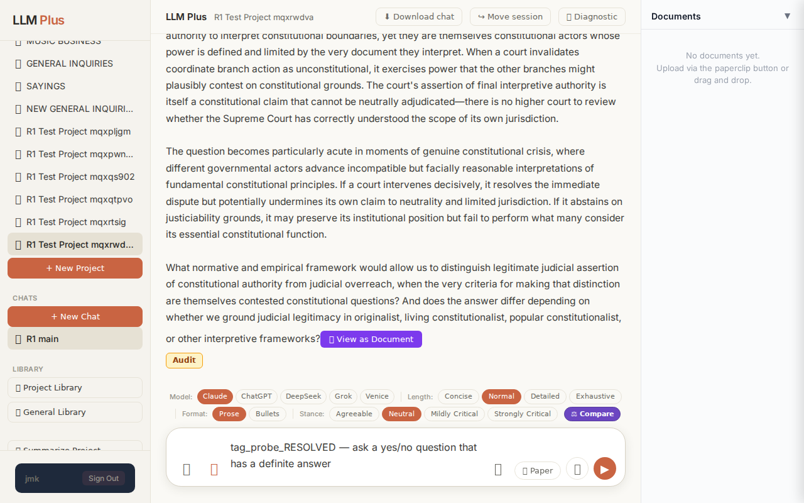
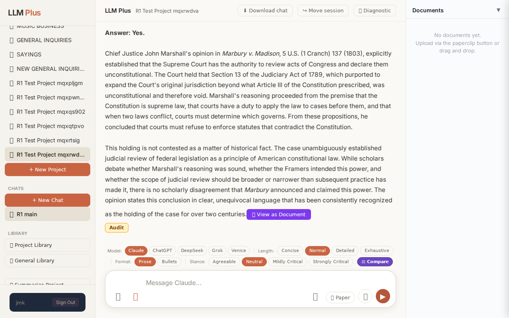

Exchange #1 in test project (Invariant A check)
R1 approach: substantive_question
R1 reasoning: (brain returned malformed JSON; fallback used)
R1 input (verbatim):
tag_probe_OPEN — ask an open-ended scholarly question with no resolution
App page text after:
Tractatus delta
nodes: 0 → 7 (Δ 7)
new ids: 1.0, 1.1, 1.2, 1.3, 1.4, 1.5, 1.6
new tags: OPEN, OPEN, ASSUMES, OPEN, OPEN, QUESTION, OPEN
tags valid: YES ·
ids valid: YES
Network calls
| method | path | status | ms | response excerpt |
|---|
| POST | /api/chat | 200 | 12335ms | data: {"type":"status","status":"thinking"}
data: {"type":"text","text":"#"}
data: {"type":"text","text":" The Paradox of Judicial Legitimacy in Constitutional Crises\n\nHere"}
data: {"type":"text","text":" is an open-ended scholarly question that touches on fundamental tensions in constitutional governance:\n\n**How can courts"}
data: {"type":"text","text":" maintain their legitimacy as impar |
| POST | /api/tractatus/update | 200 | 6574ms | data: {"type":"status","message":"Updating project memory..."}
data: {"type":"text","text":"```json\n{\n \"1"}
data: {"type":"text","text":".0\": \"OPEN: How can courts maintain legitimacy as impartial constitutional arbiters when deciding cases that impl"}
data: {"type":"text","text":"icate their own institutional power, and when does judicial review itself become a constitutional crisis rath |
SSE events observed (27)
{"type":"status","status":"thinking"}
{"type":"text","text":"#"}
{"type":"text","text":" The Paradox of Judicial Legitimacy in Constitutional Crises\n\nHere"}
{"type":"text","text":" is an open-ended scholarly question that touches on fundamental tensions in constitutional governance:\n\n**How can courts"}
{"type":"text","text":" maintain their legitimacy as impartial arbiters of constitutional meaning when they must simultaneously decide"}
{"type":"text","text":" cases that directly implicate their own institutional power, and when does the exercise of judicial review"}
{"type":"text","text":" itself become a constitutional crisis rather than a resolution of one?**\n\nThis"}
{"type":"text","text":" question sits at the intersection of several unresolved theoretical problems. Courts claim"}
{"type":"text","text":" authority to interpret constitutional boundaries, yet they are themselves constitutional actors whose power"}
{"type":"text","text":" is defined and limited by the very document they interpret. When a court invalidates coordinate branch"}
{"type":"text","text":" action as unconstitutional, it exercises power that the other branches might pl"}
{"type":"text","text":"ausibly contest on constitutional grounds. The court's assertion of final interpretive authority is"}
{"type":"text","text":" itself a constitutional claim that cannot be neutrally adjudicated—"}
{"type":"text","text":"there is no higher court to review whether the Supreme Court has correctly understood"}
{"type":"text","text":" the scope of its own jurisdiction.\n\nThe question becomes particularly acute in moments of genuine constitutional"}
{"type":"text","text":" crisis, where different governmental actors advance incompatible but fac"}
{"type":"text","text":"ially reasonable interpretations of fundamental constitutional principles. If a court intervenes decisively,"}
{"type":"text","text":" it resolves the immediate dispute but potentially undermines its own claim to neutrality and limited jurisdiction. If"}
{"type":"text","text":" it abstains on justiciability grounds, it may preserve its"}
{"type":"text","text":" institutional position but fail to perform what many consider its essential constitutional"}
{"type":"text","text":" function.\n\nWhat normative and empirical framework would allow us to distinguish legitimate"}
{"type":"text","text":" judicial assertion of constitutional authority from judicial overreach, when the very"}
{"type":"text","text":" criteria for making that distinction are themselves contested constitutional questions? And does"}
{"type":"text","text":" the answer differ depending on whether we ground judicial legitimacy in originalist, living constitutionalist, popular"}
{"type":"text","text":" constitutionalist, or other interpretive frameworks?"}
{"type":"tractatus_trigger","projectId":"46d5017b-8ad4-4397-86cc-c186fc018ef6","userMessage":"tag_probe_OPEN — ask an open-ended scholarly question with no resolution","assistantRespo
{"type":"[DONE]"}
Judge critique
(judge returned no JSON; raw text included)
Screenshots



Exchange #2 in test project (Invariant A check)
R1 approach: substantive_question
R1 reasoning: (brain returned malformed JSON; fallback used)
R1 input (verbatim):
tag_probe_RESOLVED — ask a yes/no question that has a definite answer
App page text after:
Tractatus delta
nodes: 7 → 11 (Δ 4)
new ids: 1.7, 1.7.1, 1.7.2, 1.7.3
new tags: RESOLVED, DOCUMENT, ASSERTS, DOCUMENT
tags valid: YES ·
ids valid: YES
Network calls
| method | path | status | ms | response excerpt |
|---|
| POST | /api/chat | 200 | 9658ms | data: {"type":"status","status":"thinking"}
data: {"type":"text","text":"# A"}
data: {"type":"text","text":" Definite Constitutional Question\n\nHere is a yes/no question with a clear, definitive answer:\n\n**Did"}
data: {"type":"text","text":" the United States Supreme Court hold in *Marbury v. Madison* (1803) that it possesses the power of"}
data: {"type":"text","text":" judicial review—th |
| POST | /api/tractatus/update | 200 | 7102ms | data: {"type":"status","message":"Updating project memory..."}
data: {"type":"text","text":"```json\n{\n \"1"}
data: {"type":"text","text":".0\": \"OPEN: How can courts maintain legitimacy as impartial constitutional arbiters when deciding cases that implicate their own institutional power, and when does judicial review itself become a constitutional crisis rather than a resolution?\",\n \"1.1 |
SSE events observed (21)
{"type":"status","status":"thinking"}
{"type":"text","text":"# A"}
{"type":"text","text":" Definite Constitutional Question\n\nHere is a yes/no question with a clear, definitive answer:\n\n**Did"}
{"type":"text","text":" the United States Supreme Court hold in *Marbury v. Madison* (1803) that it possesses the power of"}
{"type":"text","text":" judicial review—that is, the authority to declare acts of Congress unconstitutional and void?**\n\n**Answer: Yes.**\n\nChief"}
{"type":"text","text":" Justice John Marshall's opinion in *Marbury v. Madison*, 5 U.S. (1 Cranch) 137"}
{"type":"text","text":" (1803), explicitly established that the Supreme Court has the authority to review acts of Congress and declare them unconstitutional. The"}
{"type":"text","text":" Court held that Section 13 of the Judiciary Act of 1789, which purported to expand the Court's original"}
{"type":"text","text":" jurisdiction beyond what Article III of the Constitution prescribed, was unconstitutional and therefore void. Marshall's reasoning"}
{"type":"text","text":" proceeded from the premise that the Constitution is supreme law, that courts"}
{"type":"text","text":" have a duty to apply the law to cases before them, and that when two laws conflict, courts"}
{"type":"text","text":" must determine which governs. From these propositions, he concluded that courts must"}
{"type":"text","text":" refuse to enforce statutes that contradict the Constitution.\n\nThis holding is not contested as"}
{"type":"text","text":" a matter of historical fact. The case unambiguously established judicial review of federal legislation as a principle"}
{"type":"text","text":" of American constitutional law. While scholars debate whether Marshall's reasoning was sound, whether the Fram"}
{"type":"text","text":"ers intended this power, and whether the scope of judicial review should be broader or narrower than subsequent practice has made it"}
{"type":"text","text":", there is no scholarly disagreement that *Marbury* announced and claimed this"}
{"type":"text","text":" power. The opinion states this conclusion in clear, unequivocal language that has"}
{"type":"text","text":" been consistently recognized as the holding of the case for over two centuries."}
{"type":"tractatus_trigger","projectId":"46d5017b-8ad4-4397-86cc-c186fc018ef6","userMessage":"tag_probe_RESOLVED — ask a yes/no question that has a definite answer","assistantResponse
{"type":"[DONE]"}
Judge critique
(judge returned no JSON; raw text included)
Screenshots

